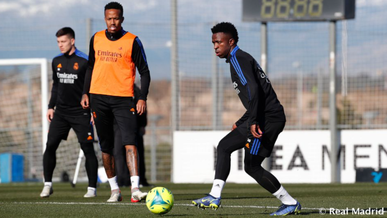

|  |
Real Madrid begin preparations for the Cadiz gameThe squad was back in training for the first session of the week at Real Madrid City as they begin their preparations for the LaLiga matchweek 18 game against Cádiz at the Santiago Bernabéu stadium (Sunday, 9pm CET). After the warm-up, the players carried out a series of fitness exercises and were divided into two rondos. |
|---|